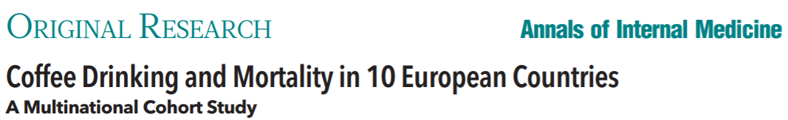

2025-10-01
Two events are disjoint/mutually exclusive if they do not have any overlapping outcomes
Addition rule: \(\text{Pr}(A \cup B) =\)
Complement rule: \(\text{Pr}(A^c) =\)
As we saw in the previous class, sometimes the probabilities of events are quite clear to calculate (e.g. dice rolls or drawing cards)
But oftentimes we have to use data to try and estimate probabilities
When we have two (or more) variables in our data, we often want to understand the relationships between them

Source: https://www.ncbi.nlm.nih.gov/pmc/articles/PMC5788283/
| Did not die | Died | Total | |
|---|---|---|---|
| Does not drink coffee | 5438 | 1039 | 6477 |
| Drinks coffee occasionally | 29712 | 4440 | 34152 |
| Drinks coffee regularly | 24934 | 3601 | 28535 |
| Total | 60084 | 9080 | 69164 |
Define events \(A\) = died and \(B\) = non-coffee drinker. Calculate/set-up the calculations for the following for a randomly selected person in the cohort:
\(\text{P}(A)\)
\(\text{P}(A \cap B)\)
\(\text{P}(A \cup B^c)\)
\(\text{P}(A)\) is an example of a marginal probability, which is a probability involving a single event
\(\text{P}(A \cap B)\) is an example of a joint probability, which is a probability involving two or more events that occur simultaneosly
We can obtain the marginal probabilities from joint probabilities:
| Did not die | Died | Total | |
|---|---|---|---|
| Does not drink coffee | 5438 | 1039 | 6477 |
| Drinks coffee occasionally | 29712 | 4440 | 34152 |
| Drinks coffee regularly | 24934 | 3601 | 28535 |
| Total | 60084 | 9080 | 69164 |
\[\begin{align*} \text{P}(B) &=\text{P}(\text{no coffee}) \\ &= \text{P}(\text{no coffee} \ \cap \text{ did not die}) + \text{P}(\text{no coffee} \ \cap \text{ died}) \\ &= \text{P}(B \cap A) + \text{P}(B \cap A^c) \\ &= \frac{5438}{69164 } + \frac{1039}{69164} \\ &= 0.0936 \end{align*} \]
| which is “or”| Did not die | Died | Total | |
|---|---|---|---|
| Does not drink coffee | 5438 | 1039 | 6477 |
| Drinks coffee occasionally | 29712 | 4440 | 34152 |
| Drinks coffee regularly | 24934 | 3601 | 28535 |
| Total | 60084 | 9080 | 69164 |
Recall events \(A\) = died and \(B\) = non-coffee drinker. Write \(\text{P}()\) notation for the conditional probability of dying given that someone does not drink coffee, and then obtain this probability.
Conditional, joint, and marginal probabilities are related via the general multiplication rule:
\[ \text{P}(A \cap B) = \]
Let’s see this in the coffee example!
Very useful for finding probability that two events will happen in sequence.
Recall, events \(A\) and \(B\) are independent when what is true about their joint probability?
Using the general multiplication rule, what is another way to determine if events \(A\) and \(B\) are independent?
Using this new test of independence, are dying and abstaining from coffee independent events?
We can re-arrange the general multiplication formula to obtain the following general formula for conditional probability. For any events \(A\) and \(B\):
\[ \text{P}(A| B) = \frac{\text{P}(A \cap B)}{\text{P}(B)} \]
Come up with a similar formula for \(\text{P}(B|A)\)
Note: complement rule holds for conditional probabilities if we condition on the same information: \(\text{P}(A|B) = 1 - \text{P}(A^c | B)\)
Let \(A\) be an event, then let \(\{B_{1},B_{2},\ldots, B_{k}\}\) be a set of mutually exclusive events whose union comprises their entire sample space \(S\)
Then Law of Total Probability (LoTP) says:
\[ \text{Pr}(A) = \text{Pr}(A \cap B_{1} ) + \text{Pr}(A \cap B_{2}) + \ldots + \text{Pr}(A \cap B_{k}) \]
Blob picture
We already did this in the coffee example! We said \(\text{P}(\text{no coffee}) = \text{P}(\text{no coffee} \ \cap \text{ did not die}) + \text{P}(\text{no coffee} \ \cap \text{ died})\)
Tool to organize outcomes and probabilities around the structure of the data. Useful when outcomes occur sequentially, and outcomes are conditioned on predecessors. Let’s do an example:
A class has a midterm and a final exam. 80% of students passed the midterm. Of those students who passed the midterm, 90% also passed the final. Of those student who did not pass the midterm, 15% passed on the final. You randomly pick up a final exam and notice the student passed. What is the probability that they passed the midterm?
Using \(\text{P}()\) notation, what probability are we interested in? What probabilities do we need to calculate along the way?
Let’s construct our tree!
In the tree diagram, where are the three types of probabilities appearing?
As we saw before, the two conditional probabilities \(P(A|B)\) and \(P(B|A)\) are not the same. But are they related in some way?
Bayes’ rule:
\[ \text{P}(A|B) = \frac{P(B|A) P(A)}{P(B)} \]
Suppose we have a random process and have a defined event \(A\)
Further suppose we can break up the sample space into \(k\) disjoint/mutually exclusive outcomes or events \(B_{1}, B_{2}, \ldots, B_{k}\)
Without loss of generality, suppose we want \(\text{P}(B_{1} | A)\)
Bayes’ Theorem states:
\[\begin{align*} \text{P}(B_{1} | A ) &= \frac{\text{P}(A|B_{1}) \text{P}(B_{1})}{\text{P}(A)}\qquad \qquad\qquad \qquad \text{(Bayes' Rule)} \\ &= \frac{\text{P}(A|B_{1})\text{P}(B_{1})}{\text{P}(A\cap B_{1}) + \text{P}(A \cap B_{2}) + \ldots + \text{P}(A \cap B_{k})} \qquad \qquad \text{(LoTP)} \\ &=\frac{\text{P}(A|B_{1}) \text{P}(B_{1})}{\text{P}(A|B_{1}) \text{P}(B_{1}) + \text{P}(A | B_{2}) \text{P}(B_{2}) + \ldots + \text{P}(A | B_{k} ) \text{P}(B_{k})} \end{align*}\]
In Canada, about 0.35% of women over 40 will develop breast cancer in any given year. A common screening test for cancer is the mammogram, but this test is not perfect.
In about 11% of patients with breast cancer, the test gives a false negative: it indicates a woman does not have breast cancer when she does have breast cancer.
In about 7% of patients who do not have breast cancer, the test gives a false positive: it indicates these patients have breast cancer when they actually do not.
If we tested a random Canadian woman over 40 for breast cancer using a mammogram and the test came back positive, what is the probability that the patient actually has breast cancer?